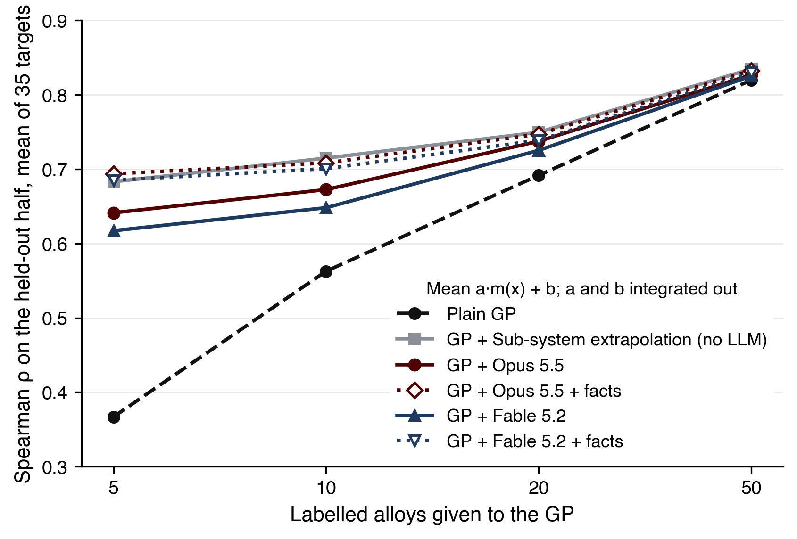

MATERIALS SCIENCE & ENGINEERING
TEXAS A&M UNIVERSITY
Department of Materials Science and Engineering
53

Mean ρ at 5 / 10 / 20 / 50 labels
plain GP: 0.37 / 0.56 / 0.69 / 0.82
Opus: 0.64 / 0.67 / 0.74 / 0.83
Opus + facts: 0.69 / 0.71 / 0.75 / 0.83
extrapolation: 0.68 / 0.71 / 0.75 / 0.83